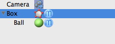

子オブジェクトの取り込みツール
子オブジェクトの取り込みの目的は、２つのオブジェクトを合成する事です。スプラインオブジェクト同士やポリゴンオブジェクト同士を合成するために使用する事ができますが、２つの異なるタイプをミックスする事はできません。
編集モード
このツールは、ローポリゴンオブジェクトかロースプラインオブジェクトでのみ実行できます。またパラメトリックオブジェクトやクリエータオブジェクトからデータを取り込むために使用する事が可能です。


この "子オブジェクトの取り込み" ツールは、ツールビューには表示されないヘッドレスツールです。これを使用するためには、あなたが取り込みたいオブジェクトを、最終的にそのデータが合成されるオブジェクトにドラッグ＆ドロップしなければなりません。下のイメージでは、ローポリゴンオブジェクトに取り込まれる球体オブジェクトを見る事ができます。次に親オブジェクト（この例では "Box" という名称のポリゴンオブジェクト）を選択し、"ツール 子オブジェクトの取り込み" メニューから 子オブジェクトの取り込み を呼び出します。球体オブジェクトのデータは、ポリゴンオブジェクトにコピーされます。コピーした小オブジェクトは削除するか他の部分で再利用する事ができます。
子オブジェクトの取り込み" メニューから 子オブジェクトの取り込み を呼び出します。球体オブジェクトのデータは、ポリゴンオブジェクトにコピーされます。コピーした小オブジェクトは削除するか他の部分で再利用する事ができます。

補助キー
-
- なし
プロパティ
- なし